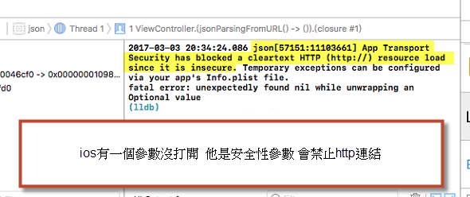
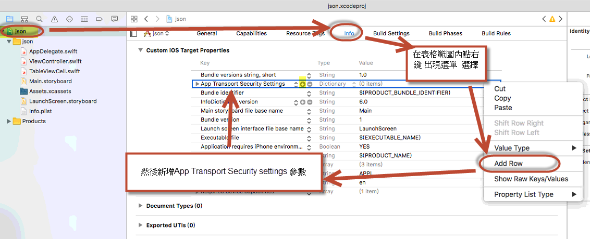
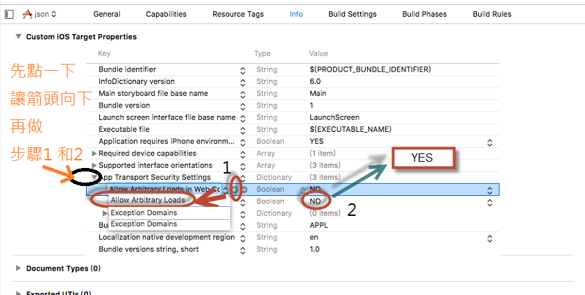

第7章 APP和伺服器如何交換資料
iOS有通訊上的安全機制，當你想要使用HTTP協定之前，你必須解除這個安全機制。
下面是未解除安全機制就執行所出現的錯誤訊息

下面是解除這個安全機制的方法
必須做下面設定 來打開http的安全設定


GET和POST是HTTP協議中的兩種傳送request帶資料給伺服器的方法。 GET和POST做的事情是一樣一樣的。 但是
《let a=data》會把data的optional殼剝掉（還記得以前上過關於殼的事情吧 ， 有殼才能表達nil）
如果 data是nil，就不會進來這邊執行程式
在日常生活中，人與人之間的交流需要彼此都聽得懂得語言。
語言有其規則名詞接著動詞是一種意思，反過來又是一種意思，
例如 我打 VS 打我 意義就不一樣，所以兩個人溝通必須要有相同的規則，才能搞對意思
同樣的，在計算機的不同程式之間，或者不同的程式語言之間進行交換資料，
也需要一種大家都能聽得懂得‘語言’，例如前面10個字是名字，然後是性別，生日等等
兩隻程式都都知道規則就能正確交換資料，而這個規則就是資料交換格式，以特定的形式來進行描述資料。
可擴充套件標記語言，標準通用標記語言的子集，是一種用於標記電子檔案使其具有結構性的標記語言。
例如使用name標籤來定義名字 →〈name〉JSON〈／name〉
JSON（JavaScript Object Notation）是一種常用的資料交換格式 。
另一種常見的資料交換格式式XML，XML很像HTML 以各種不同的標籤標示資料，只是XML標籤是自定義的，例如<STUDENT><NAME>川普</NAME> <ID>10414001</ID></STUDENT>
做為資料交換的發送端把每一筆資料按照協商好的標籤 標註起來，
然後把資料送到接收端，接收端也看得懂標籤的意義，所以利用標簽正確取出資料。
所以這是一種資料交換格式。
而JSON也是一樣，也是一種資料交換格式。
JSON全名叫做JavaScript Object Notation
JSON格式他和XML不一樣，不是使用標籤，而是使用兩種符號 {}和[]來表示兩種電腦科學常用的資料格式物件和陣列
物件(object)用大括號 { }
陣列(array)用中括號 [ ]
這樣的好處是可以接收到可以直接吻合程式中的資料結構，不用相XML都是一個一個的無組織資料必須自己在整理一次，而在發送端也式可以使用程式中的陣列 變成JSON格式發送
所以最近JSON被當作資料交換格式來傳輸的比率越來越高
物件(object) {"subject":"Math","score":80}
這就是json裡的object
key-value就是指一個鍵值(key)對應一個值(value)，
像是subject這個key有值叫Math
score它的值為80
這裡注意一點
json object的鍵值(key)，一定要用文字做鍵值
以下是錯誤的
{0:"Tom", 1:"John", 2:"Amy", 3:"Ivy"} // error syntax
正確應改為
{"0":"Tom", "1":"John", "2":"Amy", "3":"Ivy"}
先準備好伺服器端的程式 jsonpost.php
json_decode是php的json解碼器網址→ http://163.17.20.6
下面用GET寫法來說明參數
http://163.17.20.6/mem.php/?acc=帳號&pwd=密碼
http://163.17.20.6/memnew.php/?acc=帳號&pwd=密碼
http://163.17.20.6/memdel.php/?acc=帳號&pwd=密碼
http://163.17.20.6/memupdate.php/?acc=帳號&pwd=密碼&newpwd=新密碼